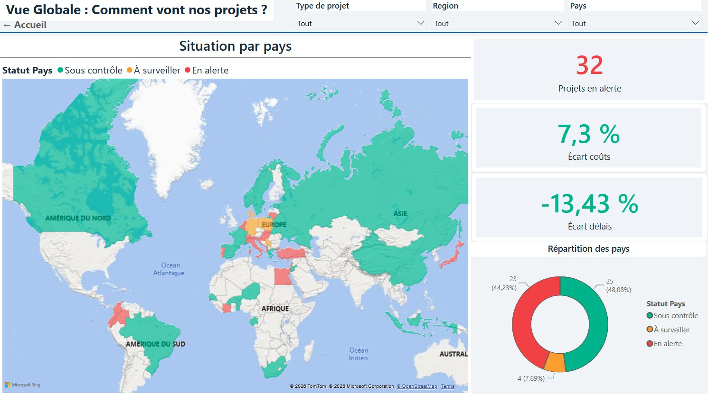
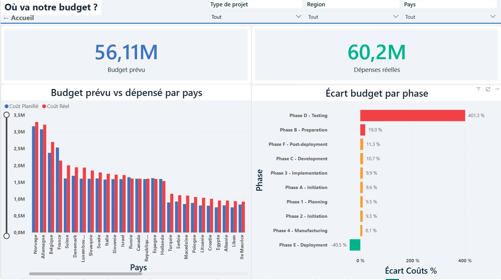
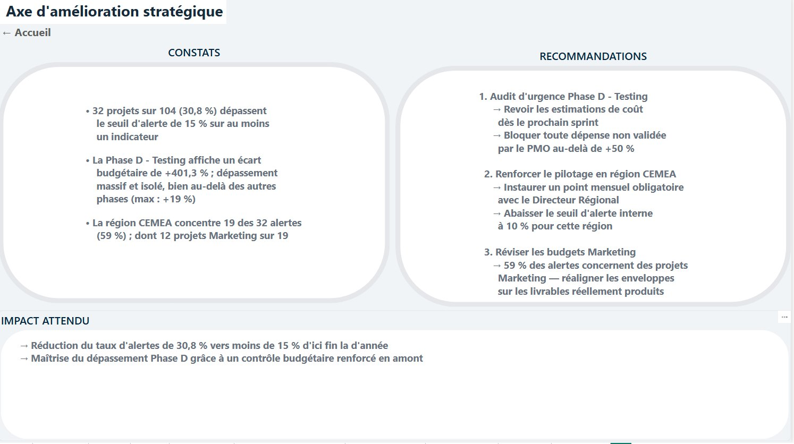
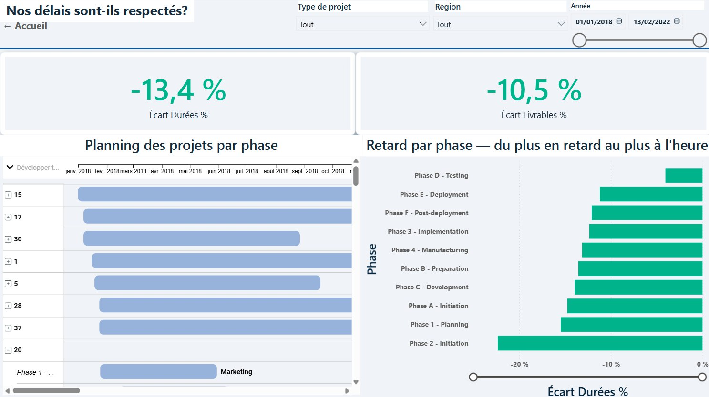
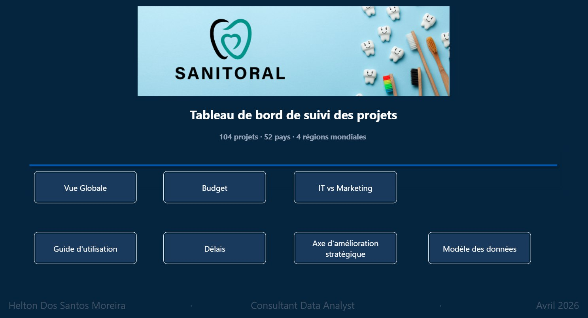

PROJET PHAREPOWER BI · KPI · REPORTING DE DIRECTION
Pilotage d'un portefeuille de 104 projets : détection des dérives et sécurité des accès
Contexte et enjeu
Un groupe international pilote 104 projets IT et Marketing dans 52 pays. Les données existent, mais aucun outil ne permet de suivre les écarts de coûts, de délais et de livrables, ni de restreindre chaque direction à son périmètre.
Démarche
- Un tableau de bord Power BI de 9 pages, avec une alerte automatique dès 15 % d'écart sur les coûts, les délais ou les livrables
- Une sécurité au niveau des lignes sur 3 rôles : direction générale, régionale et pays
- 25 mesures DAX, une page de recommandations chiffrées et un guide d'utilisation intégré





RÉSULTATS
19 des 32 projets en alerte sont concentrés dans une seule région, et une seule phase (+401,3 %) faussait la lecture du budget global. Le plan d'action proposé vise à ramener le taux d'alerte de 30,8 % à moins de 15 %.
Power BIDAXKPIRLS
Voir le projet →